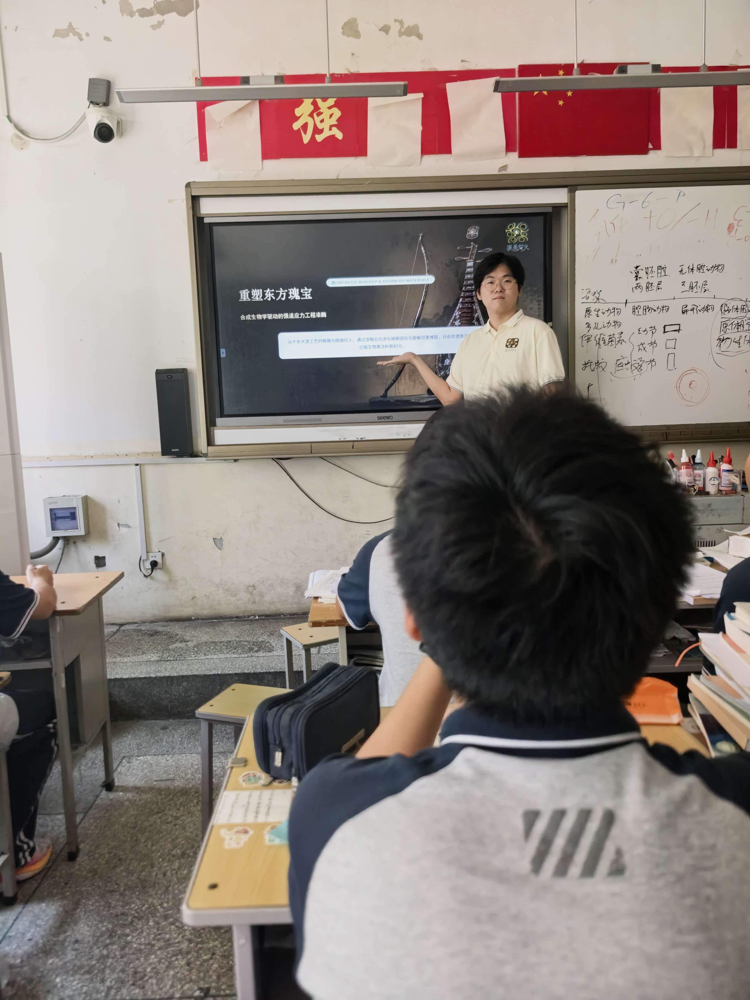
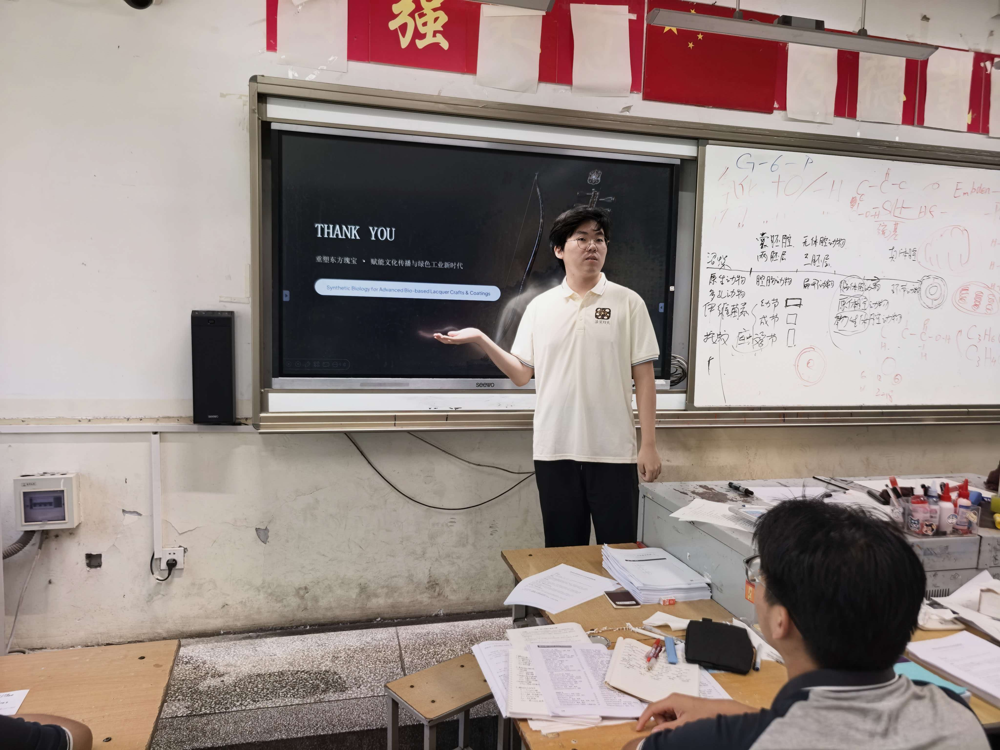

Education · 教育与科普
本项目同时开展面向中学生与公众的科普传播，目标是把"AI 优化漆酶 → 提升大漆生产效率"这一交叉方向用通俗的方式讲清楚。
1. 科普目标人群 / Audience
- 中学生（生物竞赛班）——已开展校园宣讲
- 公众 ——通过科普短文 / 海报 / 展示视频触达（初赛材料）
2. 活动记录 / Activities
| 时间 | 形式 | 对象 | 主题 | 说明 |
|---|---|---|---|---|
| 2026-08-19 | 校园现场宣讲 | 临汾一中 · 生物竞赛班（高中生） | AI + 漆酶进校园 | 介绍项目"用 AI 优化漆酶、提升大漆生产效率"；亦计入 Human Practices |
现场照片：


3. 科普材料 / Materials
队伍已提交的初赛材料（位于仓库 初赛材料/ 目录，均已解压为实际文件）：
- 海报：
海报.png - Logo：
logo（白背景）.jpg - 科普短文：
科普短文.pdf - 展示视频：
视频链接.docx（内含视频链接）
最后更新：2026-09-07
内容与 Gitee 仓库 wiki/ 同步 · 最后生成 2026-09-08Gitee ↗